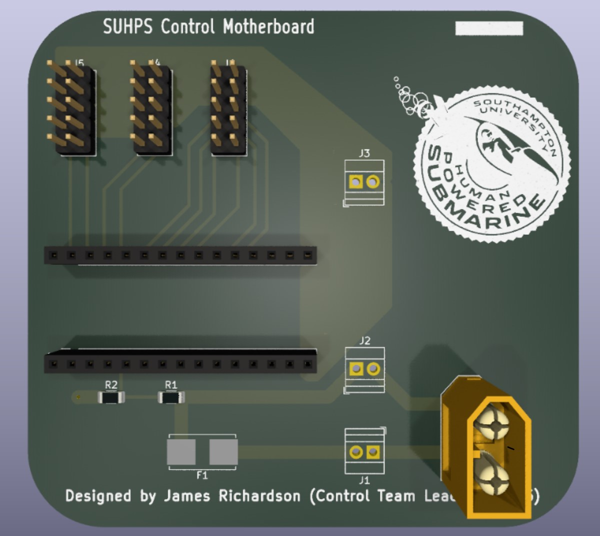
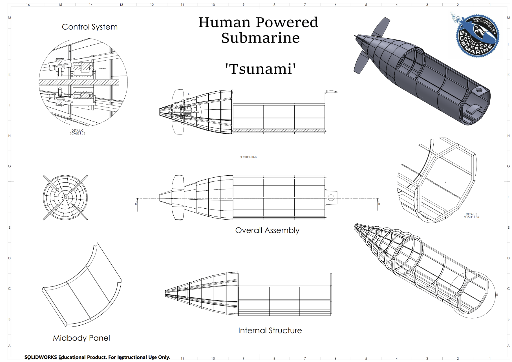
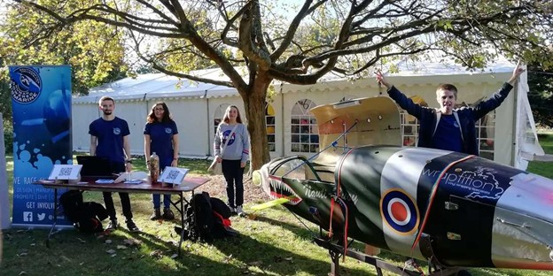
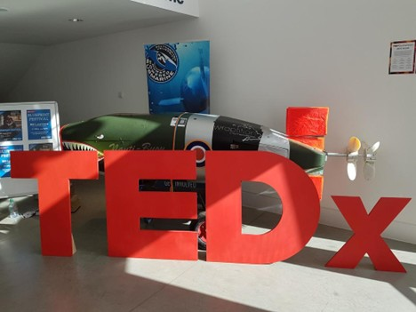
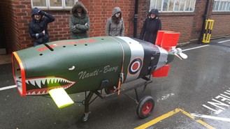
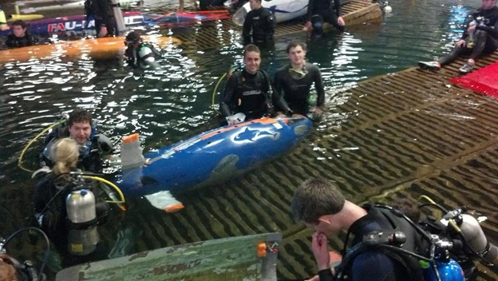
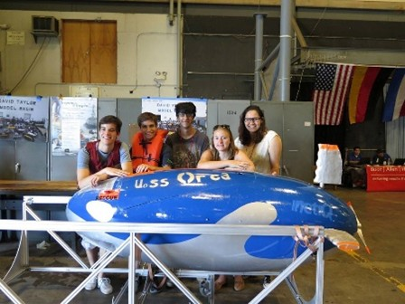
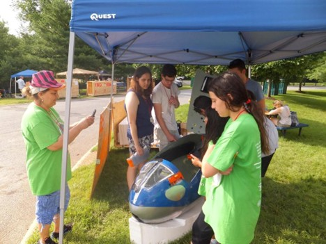

Tsunami
Our newest submarine, SUHPS Tsunami brings both an economic and environmental shift in comparison to our previous designs, the design and build stages of Tsunami brought in new ideas, with a change to more environmentally friendly materials, with aluminium to replace the fibreglass hull, thus both making the submarine cheaper and more environemntal. Furthermore, with this new design we brought in the use of flat packing in order to easily transport the submarine around, especially if it needs to be taken to the United States for the next ISR.



Tempest
Our latest submarine, SUHPS Tempest brought in a new generation, and with it, a whole host of new improvements. From the introduction of a monocoque Fibreglass hull, and taking part in both eISR 2020 and 2022. Bringing back the contra-rotating prop design into our designs to help to deal with the roll induced by a single propellor. With the submarine's monocoque design, the design was heavily modified over the course of it's use before finally being retired to make way for our new submarine Tsunami
Nauti-Buoy
Our third submarine, SUHPS Nauti-Buoy brought a wide range of improvements in comparison to UoSS Orca and Kaiju, from fixing many of our problems that plagued UoSS Kaiju, such as the introduction of a larger hull with a contra-rotating set of propellors in order to improve both stability and speed whilst also increasing the comfort of the diver inside. Whilst not participating in any ISR events, it brought both valuable larning and outreach to our society, even being featured with TEDx!



Kaiju
Our second submarine, SUHPS Kaiju improved upon the Nauti-Buoy design to bring a more advanced and streamlined submarine to our next competition at ISR 14, bringing further knowledge and understanding from this race into our future designs with Tempest and Nauti-Bouy.
UoSS Orca
Our first submarine, UoSS Orca was our first created human powered submarine. Competing in ISR 13 alongside doing testing in Boldrewood wave tank. Whilst being unable to finish the race, the lessons learnt from the first design through both its short design, build and testing phase prepared us for our future submarines and to provide better knowledge and understanding for our divers involved in the attempts.



.jpg)